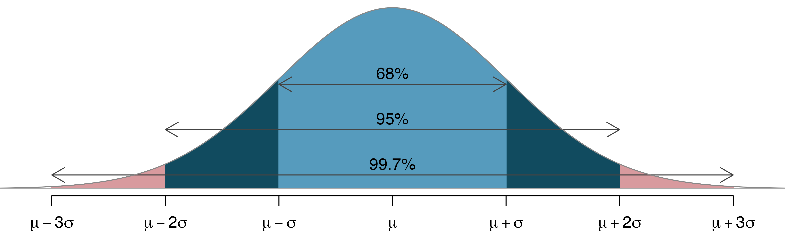

Code
props_df(DATA, GROUP, OUTCOME, VAL)The bacteria data set contians information on whether bacteria (y: y or n) is present after utilizing treatments (ap: active or placebo).
We are interesting in determine the proportion of having bacteria present is different for those taking an “active” or “placebo”.
We are interesting in determining if different groups see different proportions of a binary outcome.
We compute the proportions of observing the binary outcome in Group 1 and Group 2 and see if they are fundamentally different from each other.
| Groups | Outcome 1 | Outcome 2 |
| Group 1 | \(p_{11}\) | \(p_{21}\) |
| Group 2 | \(p_{12}\) | \(p_{22}\) |
We want to compare \(p_{11}\) and \(p_{12}\), to determine if the probability of outcome 1 are the same for both groups.
We can use both \(p_{11}\) and \(p_{12}\) to determine if there is a fundamental difference.
However, it will be more beneficial to utilize one statistic to contruct the sampling distribution.
\[ T = \hat p_{11} - \hat p_{12} \]
We will test the following hypothesis:
\[ H_0:\ \Delta = p_1-p_2 = 0 \]
\[ H_a:\ \Delta = p_1 - p_2 \neq 0 \]
The Normal Distribution is a probability distribution that is symmetric, with most of the data points clustering around the mean.
The Standard Normal Distribution is a special type of normal distribution with a mean of 0 and a standard deviation of 1. It’s often used as a reference to convert any normal distribution to a standard form.
A Z-score (or standard score) tells us how many standard deviations an individual data point is from the mean. It’s calculated as: \(Z = \frac{X - \mu}{\sigma}\)
The Empirical Rule provides a way to understand the spread of data in a normal distribution by describing how data points cluster around the mean. According to this rule:
In a normal distribution:
68% of data lies between \((\mu - \sigma)\) and \((\mu + \sigma)\).
95% of data lies between \((\mu - 2\sigma)\) and \((\mu + 2\sigma)\).
99.7% of data lies between \((\mu - 3\sigma)\) and \((\mu + 3\sigma)\).
These intervals allow us to estimate probabilities for data within each range without needing to calculate exact probabilities.

What does the Central Limit Theorem (CLT) actually tell us?
The CLT states that:
The CLT is powerful for several reasons:
The inferential procedures, such as computing the p-value or confidence interval, can be constructed with mathematical models.
\[ H_0:\ \Delta = p_1-p_2 = 0 \]
\[ H_a:\ \Delta = p_1 - p_2 \neq 0 \]
#>
#> 2-sample test for equality of proportions with continuity correction
#>
#> data: c(93, 84) out of c(124, 96)
#> X-squared = 4.6109, df = 1, p-value = 0.03177
#> alternative hypothesis: two.sided
#> 95 percent confidence interval:
#> -0.23516294 -0.01483706
#> sample estimates:
#> prop 1 prop 2
#> 0.750 0.875